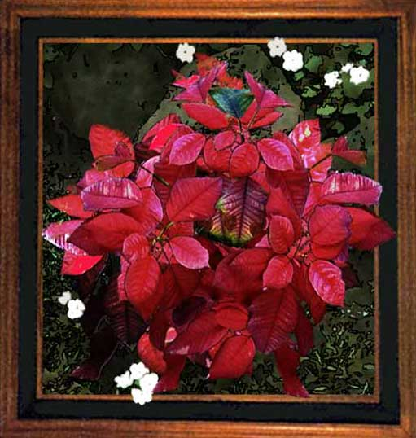

| Poinsettia. Paintage, filters. The white flowers in the paintage are impatiens I added. The poinsettia whose leaves turn bright red in November and December is a favorite potted plant for Christmas displays. It also grows in the ground as a shrub, and if properly cared for is beautiful in the winter. |